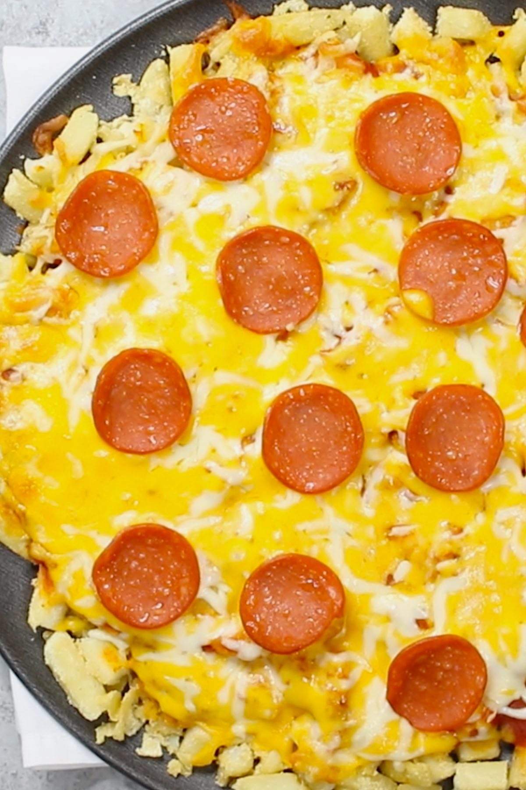

Peperoni Pizza Fries

Fun Pizza Idea combined with French Fries
Pepperoni Pizza Fries are loaded with crispy French fry pizza crust and cheesy pepperoni toppings. This is a special pizza you’ve never had before!
Ingredients:
Pizza Crust
- 500 g French Fries (frozen or freshly cocked)
- 60 g Cornstarch
- Salt and Pepper
The Toppings
- 75 ml Tomato Sauce
- 240 g Shredded Cheese
- 100 g Peperoni Slices
Steps:
The Crust
- Remove the French fries from the freezer and let them thaw for about 5-10 minutes (you don’t need to let it thaw completely).
- Preheat oven to 200°C and set aside a pizza pan.
- In a large mixing bowl, add French fries, then use a fork to mash them into smaller pieces.
- Add cornstarch, salt, and pepper. Mix well.
- Pour the French fries onto the pizza pan.
- Press the pieces together to make the crust. (Make sure to press them as much as possible.)
Add the Toppings
- Add a well seasoned tomato sauce on top of the crust, and spread it out evenly.
- Sprinkle the shredded cheese on top of the sauce.
- Add pepperoni slices.
Bake the Pizza and Serve
- Bake for 15-20 minutes or until the cheese is melted.
- Remove from the oven and let it cool for a few minutes. Serve with a pie server and enjoy!